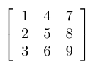

LaTeX Export Options#
LaTeX export is done through the system clipboard. The user should populate the grid with the desired data, select the LaTeX options on the right side of the program window and then copy the grid as LaTeX code using Ctrl+L, the Edit > Copy as LaTeX option from the menu, or its corresponding toolbar button. From there the user can paste the code into any editor they are using to create their document. Note that the entire grid will be exported to LaTeX code not just any selections.
longtable & tabular Options#
These modes have options for column alignment, a table border, and several options for division lines between rows and columns. The Column Alignment is the alignment used for all columns in the table. These can be overridden by header rows or columns. The alignment is on each column but is easily editable in the pasted LaTeX code.
The Divisions options are for the selection of common division lines in the table. If you have worked with LaTeX you know there are many more possibilities here for row and column divisions. This program just includes some of the more common selections and if they are not exactly what is needed it should only take some minimal editing.
Table Boarder puts a simple border around the entire table.
Division After First Row puts a line directly below the first row.
Division on All Rows puts a line directly below each row of the table and one at the top.
Division After First Column puts a line directly to the right of the first column.
Division After All Columns puts a line directly to the right of each column of the table and one at the left.
At the bottom there are options to include math mode around the contents of each cell, and to include the arraystretch renew command. If the math mode is selected, then each cell will be put into inline math mode.
These modes also have options for both row and column headers. Each header type can include as many rows and columns as you wish, you can set the alignment of the headers as well as the font styles of the headers. When a cell is both a row header and a column header the attributes for the column header are used. For example,
A table with no headers:

The same table with just one column header in bold:

The same table with just one row header in italics:

The same table with one row header in italics and one column header in bold:

tabbing Options#
The tabbing mode has only two options, the column spacing for each column and to include math mode on each cell. The column spacing will be in points, remember 72 points to an inch. If the math mode is selected, then each cell will be put into inline math mode.
array Options#
This mode has options for column alignment, a table border, and several options for division lines between rows and columns. These are the same as with the longtable and tabular options. There are also options to include the display math mode around the code, and to include the arraystretch renew command. This mode also allows the user to select a decoration, that is include brackets, parenthesis, or vertical bars around the matrix.
matrix Options#
This option requires the amsmath package to be used. There are options to include the display math mode around the code, to include the arraystretch renew, and to include bracket, parenthesis, or vertical bar decorations around the matrix.

Special Matrix Options#
All of these option will require the amsmath package to be used. When the special matrix type is selected the user will have the option of exporting to a pmatrix, bmatrix, vmatrix, or Vmatrix. The only other options are to include the display math mode around the code and to include the arraystretch renew command.
pmatrix
bmatrix
vmatrix
Vmatrix